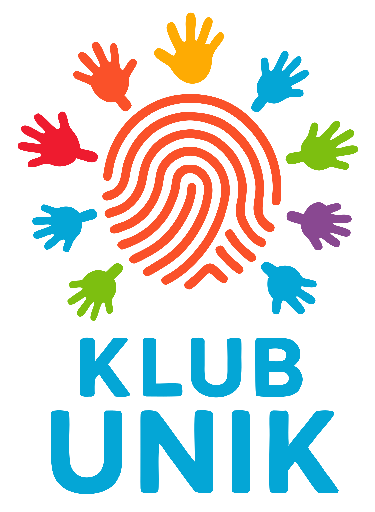

Et inkluderende fællesskab og en tryg øvebane for sårbare børn.
Mød os på FacebookKlub Unik er en frivillig, forældreinitieret organisation og et inkluderende fællesskab i dagtimerne for børn og unge i mistrivsel. Klubben er startet af forældre til børn med skolevægring og ufrivilligt skolefravær — med ønsket om at skabe et trygt sted, hvor børnene kan opleve fællesskab, relationer og trivsel i eget tempo.
Vi hjælper børn og unge i skolealderen, som oplever skolevægring, ufrivilligt skolefravær eller mangler sociale fællesskaber. Derudover støtter vi familierne omkring børnene gennem netværk og erfaringsudveksling — fordi vi ved, at det kan føles meget ensomt at stå i den situation.
Som frivillig organisation skaber vi trygge rammer for sociale, kreative og relationelle aktiviteter. Fokus er på trivsel frem for præstation, og alle aktiviteter tilpasses børnenes behov og overskud.
Ideen udspringer af Klub Fristedet i Aarhus, som vi jævnligt sparrer med.
Vi forældre er drivkraften — alle bidrager til fællesskabet og hjælper hinanden.
Alle børn deltager med en forælder eller anden omsorgsperson der kender barnet godt.
Vi skaber rum for børn der har haft svært ved at være i almene fællesskaber.
Lad os sammen skabe et unikt fællesskab — for og med vores børn.
Klub Unik er en frivillig organisation, der arbejder for at sikre, at ingen børn er overladt til isolation og ensomhed — hverken de børn, der kæmper med at passe ind, eller de familier, der bærer på tunge byrder alene.
At skabe et trygt og inkluderende fællesskab for børn og unge i mistrivsel, hvor de kan opleve tilhørsforhold, relationer og positive fællesskaber uden krav og pres.
At ingen børn eller unge skal føle sig alene eller glemt, fordi de ikke passer ind i traditionelle fællesskaber som skole og fritidsliv.
Vi arbejder for at forebygge isolation og mistrivsel blandt børn og unge ved at skabe stabile fællesskaber, positive oplevelser og sociale relationer. Samtidig arbejder vi for at styrke familierne og skabe større forståelse for skolevægring og ufrivilligt skolefravær.
Klub Unik giver børn og unge mulighed for igen at indgå i sociale relationer og opleve følelsen af at høre til. Vi oplever øget trivsel, større selvværd og mere mod hos børnene. Samtidig skaber klubben et vigtigt netværk for familier, som ofte føler sig alene i deres situation.
I Klub Unik holder vi trygge klubdage i dagtimerne med fokus på fællesskab, trivsel og relationer. Alt foregår i rolige rammer uden præstationskrav — aktiviteterne tilpasses børnenes behov og tempo, og alle er velkomne, uanset hvor de er i deres trivsel.
Klubben henvender sig til børn og unge i skolealderen med skolevægring, ufrivilligt skolefravær eller social isolation — samt deres familier.
Har du spørgsmål til Klub Unik, eller ønsker du at vide mere om, hvordan du og dit barn kan blive en del af fællesskabet?Vi hører gerne fra dig.
Klub Unik Rossinisvej 15 7400 Herning